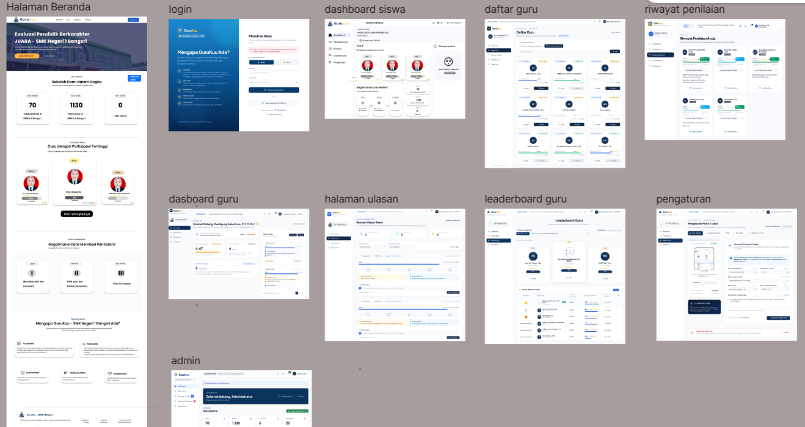

Resume
Berikut adalah ringkasan perjalanan pendidikan, pengalaman proyek, dan keterampilan yang saya kembangkan di bidang teknologi informasi. Saya terus belajar dan berusaha meningkatkan kemampuan melalui praktik langsung, pengerjaan proyek, serta eksplorasi teknologi baru.
Pendidikan
SMKN 1 Bangsri
Saya sedang menempuh pendidikan di SMKN 1 Bangsri dengan fokus mempelajari pengembangan perangkat lunak, pemrograman web, serta perancangan antarmuka pengguna. Selama belajar, saya mendapatkan pengalaman dalam mengembangkan proyek dan memahami proses pembuatan aplikasi maupun website.
- MTs Mathalibul Huda Mlonggo
- SDN 4 Sinanggul
Pengalaman
UI/UX Design & Website Development
Terlibat dalam proses perancangan tampilan website, mulai dari menyusun struktur halaman, menentukan tata letak, hingga membuat desain antarmuka yang rapi dan mudah dipahami pengguna. Pengalaman ini membantu saya memahami pentingnya desain yang terstruktur serta kesesuaian tampilan dengan kebutuhan pengguna.

Praktik Kerja Lapangan (PKL)
Web Development
Mengembangkan pengetahuan dan keterampilan di lingkungan kerja nyata dengan mempelajari proses pengembangan website, memahami alur kerja tim, serta menerapkan pengetahuan yang telah diperoleh selama pembelajaran di sekolah.
Keahlian
Technical Skills
Soft Skills
- Kemampuan belajar mandiri.
- Kerja sama dalam tim.
- Berpikir logis dan sistematis.
- Ketelitian dalam mengerjakan tugas.